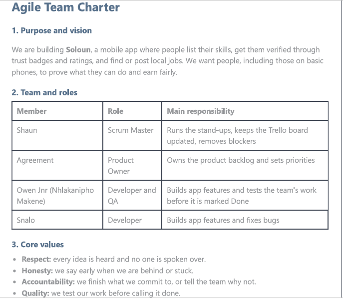
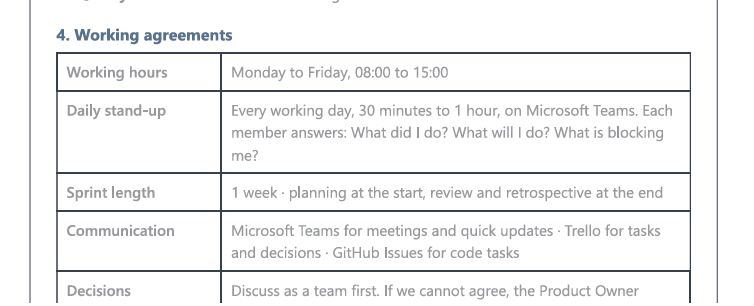
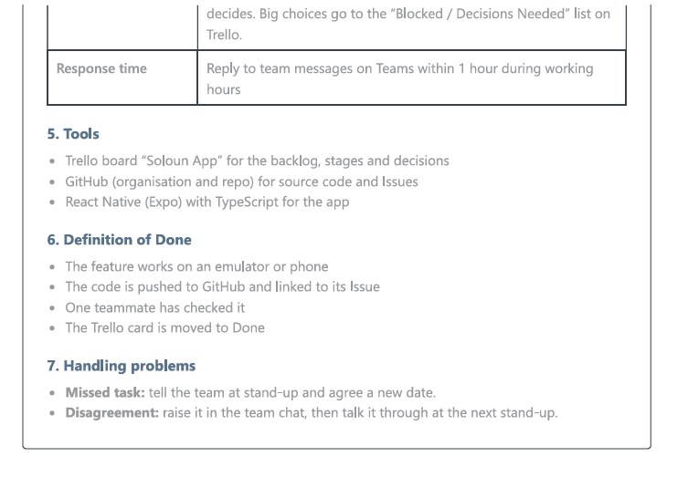
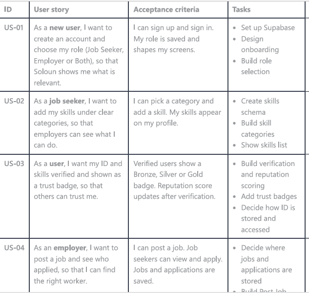
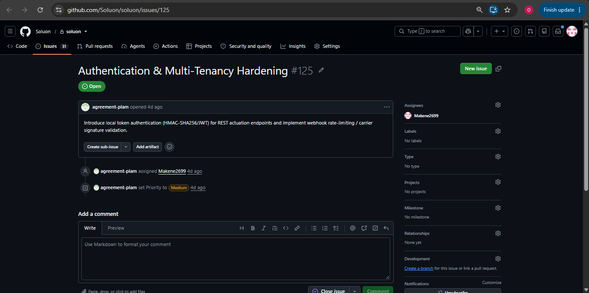
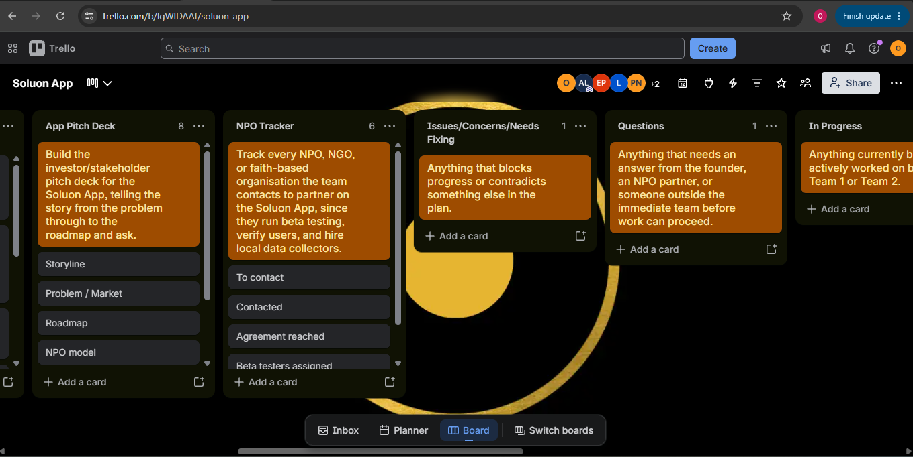
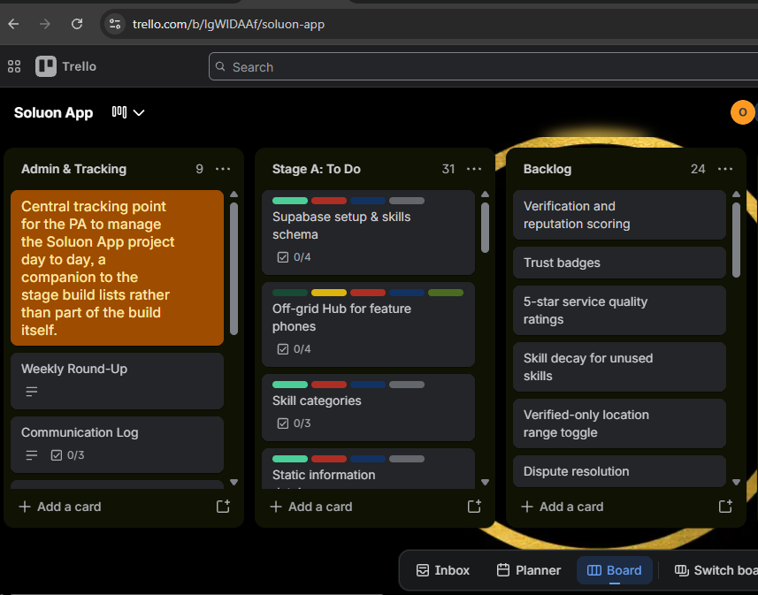
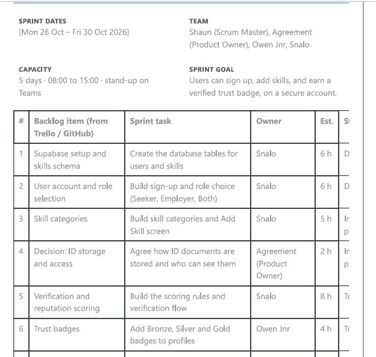

🚀 Agile Project: Soloun (Project Presentation 3)
Project: Soloun, a mobile job marketplace built with React Native (Expo) and TypeScript. It connects job seekers and employers, lets users list and verify skills, earn trust badges (Bronze, Silver, Gold), post and apply for jobs, and find nearby vendors.
My role: Developer and QA (Owen Jnr, Nhlakanipho Makene) Team members: Shaun (Scrum Master), Agreement (Product Owner), Snalo (Developer), Owen Jnr (Developer and QA)
1. Agile Team Charter
Evidence



| Item | Our Agreement |
|---|---|
| Purpose | Build Soloun, a mobile app where people list their skills, get them verified through trust badges and ratings, and find or post local jobs. |
| Core values | Respect, honesty, accountability, quality |
| Roles | Shaun: Scrum Master · Agreement: Product Owner · Owen Jnr: Developer and QA · Snalo: Developer |
| Working hours | Monday to Friday, 08:00 to 15:00 |
| Daily stand-up | Every working day, 30 minutes to 1 hour, on Microsoft Teams. Each member says what they did, what they will do, and what blocks them. |
| Sprint length | 1 week: planning at the start, review and retrospective at the end |
| Communication | Microsoft Teams for meetings and quick updates · Trello for tasks and decisions · GitHub Issues for code tasks |
| Response time | Reply to team messages on Teams within 1 hour during working hours |
| Decisions | Team discusses first; if we cannot agree, the Product Owner decides. Big choices go to the "Blocked / Decisions Needed" list on Trello. |
| Definition of Done | Feature works on an emulator or phone, code is pushed to GitHub and linked to its Issue, one teammate has checked it, and the Trello card is moved to Done |
| Handling problems | Missed task: tell the team at stand-up and agree a new date. Disagreement: raise it in the team chat, then talk it through at the next stand-up. |
Reflection (STAR)
Situation: Before writing any code, our team of four had to agree on how we would work together. In earlier group work, tasks were unclear and some members did not know what was expected of them.
Task: Create a team charter that defined our purpose, values, roles, and working rules so that everyone was aligned from day one.
Action: We agreed on roles (Shaun as Scrum Master, Agreement as Product Owner, and two developers), our working hours of 08:00 to 15:00, daily Teams stand-ups, a one-hour reply time, and a Definition of Done. I wrote these into the charter. [Add one more thing you personally did.]
Result: The charter reduced confusion and gave us something to refer back to when work slipped. I learned that Agile depends on trust and shared agreements, not only on tools. [Add one honest challenge, for example a stand-up we missed.]
2. User Stories and Tasks
Evidence

A real task from our GitHub Issues, assigned to me:

Issue #125, "Authentication & Multi-Tenancy Hardening": introduce local token authentication and webhook rate-limiting. Assigned to me with Medium priority.
Format: As a [type of user], I want [goal], so that [benefit].
| ID | User Story | Tasks |
|---|---|---|
| US-01 | As a new user, I want to create an account and choose my role (Job Seeker, Employer or Both), so that the app shows what is relevant to me. | Design onboarding · Build role selection · Save profile |
| US-02 | As a job seeker, I want to add my skills in categories, so that employers can see what I can do. | Set up Supabase and skills schema · Build skill categories · Show skills list |
| US-03 | As an employer, I want to post a job and browse workers, so that I can find help. | Build Post Job form · Build Job Board · Build Job Detail |
| US-04 | As a user, I want my skills verified with trust badges, so that others can trust me. | Build verification and reputation scoring · Add trust badges |
| US-05 | As an employer, I want to leave a 5-star rating after a job, so that reputation reflects real work. | Build rating sheet · Update reputation score |
| US-06 | As a user with a basic phone, I want to use Soloun through an off-grid hub, so that I am not left out. | Build Off-grid Hub for feature phones |
| US-07 | As a user, I want my account to be secure, so that my data is safe. | Local token authentication · Webhook rate-limiting (Issue #125) |
Reflection (STAR)
Situation: We had a big app idea but did not know how to break it into manageable pieces.
Task: Write clear user stories from the user's point of view and split each into small tasks that one person can finish.
Action: We thought about who would use Soloun (job seekers, employers, and people on basic phones) and what each of them needs. We wrote one story per need, then broke each into design, coding, and testing tasks and logged the code tasks as GitHub Issues. [Add your own contribution.]
Result: Writing from the user's perspective kept us focused on value instead of just features. Small tasks made progress easy to see. I learned that a story that is too big must be split before it can be planned. [Add what you would improve.]
3. Trello Board
Evidence

Board: Soloun App Board link: [paste your Trello board link]
Our lists include Admin & Tracking, Stage A: To Do, Backlog, Blocked / Decisions Needed and App Pitch Deck. Cards carry labels and checklists, and the board is shared with the whole team.
Reflection (STAR)
Situation: With several people working on different parts of the app, we needed one place to see who was doing what.
Task: Set up and maintain a Trello board for the project.
Action: We created lists for admin, the build stages, the backlog, and decisions that were still needed. We turned each task into a card with labels and checklists and added all members. [Add your own actions.]
Result: The board made progress and blockers visible to everyone, and the "Blocked / Decisions Needed" list stopped decisions from getting lost. I learned how a visual board reduces confusion.
4. Product Backlog
Evidence

Items from our Trello Backlog and Stage A lists, in priority order:
| Priority | Item | Status |
|---|---|---|
| 1 | Supabase setup and skills schema | [Status] |
| 2 | Skill categories | [Status] |
| 3 | Verification and reputation scoring | [Status] |
| 4 | Trust badges | [Status] |
| 5 | 5-star service quality ratings | [Status] |
| 6 | Off-grid Hub for feature phones | [Status] |
| 7 | Verified-only location range toggle | [Status] |
| 8 | Skill decay for unused skills | [Status] |
| 9 | Dispute resolution | [Status] |
Change the order and statuses so they match your Trello board.
Reflection (STAR)
Situation: We had many ideas and limited time before the deadline.
Task: Create a product backlog that listed everything needed and ranked it by importance.
Action: As a team we listed all features and the Product Owner, Agreement, ordered them by value. Core features such as the database and skills came first; extras such as skill decay and dispute resolution came later. [Add your own actions.]
Result: Prioritising stopped us from building "nice to have" features before the essential ones. I learned that a backlog is a living list that changes as we learn more.
5. Sprint Backlog
Evidence

Sprint: [Sprint 1] | Dates: [dates] Sprint goal: [One sentence, for example: Users can sign up, add skills, and receive a verified trust badge.]
| Task | Owner | Status |
|---|---|---|
| Supabase setup and skills schema | [Owner] | [Status] |
| Skill categories | [Owner] | [Status] |
| Authentication and multi-tenancy hardening (Issue #125) | Owen Jnr | [Status] |
| [Task] | [Owner] | [Status] |
| Test on device and fix bugs | Owen Jnr (QA) | [Status] |
Reflection (STAR)
Situation: We could not build the whole backlog at once, so we had to decide what to finish in one sprint.
Task: Select backlog items for the sprint and turn them into tasks that support one clear sprint goal.
Action: We chose the highest-priority items, set a sprint goal, split them into tasks and assigned owners. I took on the authentication work and testing. [Add your own actions.]
Result: A clear sprint goal gave the team focus. [Add what you completed and what carried over, and what you learned about estimating.]
6. Agile Logbook
Evidence

| Date | Meeting | Done / discussed | Blockers | Next steps |
|---|---|---|---|---|
| 01-10-2026 | Sprint planning (08:00, Teams) | Set the sprint goal: users can sign up, add skills, and earn a verified trust badge on a secure account. Chose the Supabase setup, role selection, skill categories, verification scoring, trust badges and Issue #125. | None | Snalo starts Supabase and the skills schema. Owen Jnr starts authentication work. |
| 05-10-2026 | Stand-up (08:00, Teams) | Supabase project created and skills tables started. Authentication design for Issue #125 discussed. | Decision needed on how ID documents are stored and accessed | Agreement (Product Owner) to decide. Continue schema and sign-up screens. |
| 14-10-2026 | Stand-up (08:00, Teams) | Sign-up and role selection built. Skill categories in progress. Token authentication started. | Decision needed on where jobs and applications are stored | Add the decision to the "Blocked / Decisions Needed" list and settle it with the Product Owner. |
| 21-10-2026 | Stand-up (08:00, Teams) | Verification and reputation scoring in progress. Trust badges started. Testing of finished screens began. | Skill decay rule not yet agreed | Finish scoring and badges. Owen Jnr continues QA testing. |
| 28-10-2026 | Review and retrospective (08:00, Teams) | Demo of completed work. Reviewed the Trello board and GitHub Issues. | Unfinished items carried over to the next sprint | Move unfinished cards to the next sprint and agree improvements. |
Retrospective - 👍 What went well: Trello and Teams stand-ups kept everyone aware of progress. - 👎 What did not go well: Some decisions were made late and held up related tasks. - 🔧 What we will change: Settle decisions in the first stand-up of the week and keep the board up to date daily.
Reflection (STAR)
Situation: Agile relies on regular check-ins, and we needed a record of our progress and decisions.
Task: Keep a logbook of stand-ups, sprint planning, and retrospective notes.
Action: After each Teams meeting I recorded what was done, what blocked us, and what came next. At the end of the sprint we held a review and retrospective. [Add your own actions.]
Result: The logbook showed our progress and helped us spot repeated problems. I learned that reflecting on how we work is as important as the code. [Add one personal takeaway.]
🔗 Overall Reflection: Connecting the Artefacts
The charter set how our team of four works together. The user stories defined what to build, Trello made the work visible, the product backlog ranked everything, the sprint backlog focused us on one goal, and the logbook recorded how it went. Together they showed me the full Agile cycle, and I will use it in future projects. [Add 1 or 2 sentences about how you grew as a team member.]